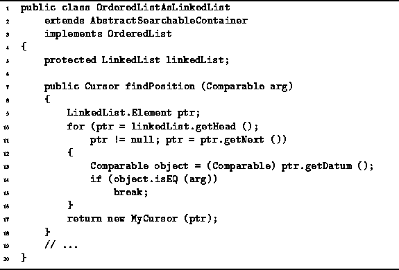
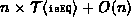
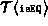

Data Structures and Algorithms
with Object-Oriented Design Patterns in Java
Data Structures and Algorithms
with Object-Oriented Design Patterns in Java
The findPosition method of the OrderedListAsLinkedList
class is used to determine the position of an item in an ordered list
implemented as a linked list.
Its result is an instance of the inner class MyCursor.
The findPosition method
is defined in Program 

Program: OrderedListAsLinkedList class findPosition method
The findPosition method takes as its argument
a Comparable object that is the target of the search.
The search algorithm used by findPosition is identical to that of
find, which is given in Program .
Consequently, the running time is the same:
,
where  is the time required to match two Comparable objects,
and  is the number of items in the ordered list.
is the number of items in the ordered list.
 Copyright © 1998 by Bruno R. Preiss, P.Eng. All rights reserved.
Copyright © 1998 by Bruno R. Preiss, P.Eng. All rights reserved.